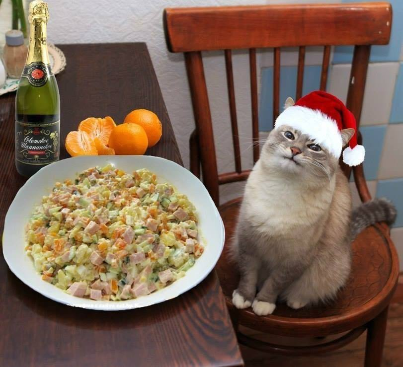

Салат оливье
Оливье – главный салат новогоднего стола. Классический вариант готовят из варёных овощей, яиц, колбасы, солёных огурцов и зелёного горошка

Состав на 6–8 порций (украдено на нормальном сайте)
| Ингредиент | Количество | Готовность |
|---|---|---|
| Картофель | 4 шт. | варёный |
| Морковь | 2 шт. | варёная |
| Яйца | 4 шт. | варёные вкрутую |
| Варёная колбаса | 300 г | сырая |
| Солёные огурцы | 3–4 шт. | сырые |
| Зелёный горошек | 1 банка | консервированный |
| Майонез | 150–200 г | для заправки |
Порядок приготовления (так же украдено)
- Картофель и морковь варят в кожуре примерно 25–30 минут, яйца – около 10 минут
- Овощи и яйца полностью остужают и очищают
- Все компоненты, кроме горошка, нарезают кубиками
- Добавляют горошек без жидкости, солят, перчат и заправляют майонезом
- Салат перемешивают и выдерживают в холодильнике один–два часа
Чем мельче и ровнее нарезка, тем лучше салат держит форму. Майонез добавляют непосредственно перед подачей, если салат готовится заранее
История блюда и его вариации можно почитать в статье Оливье (салат) в Википедии